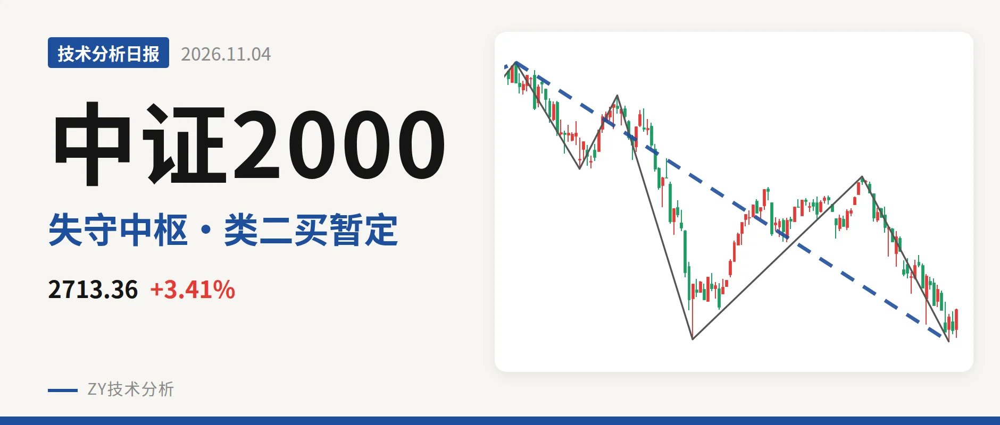
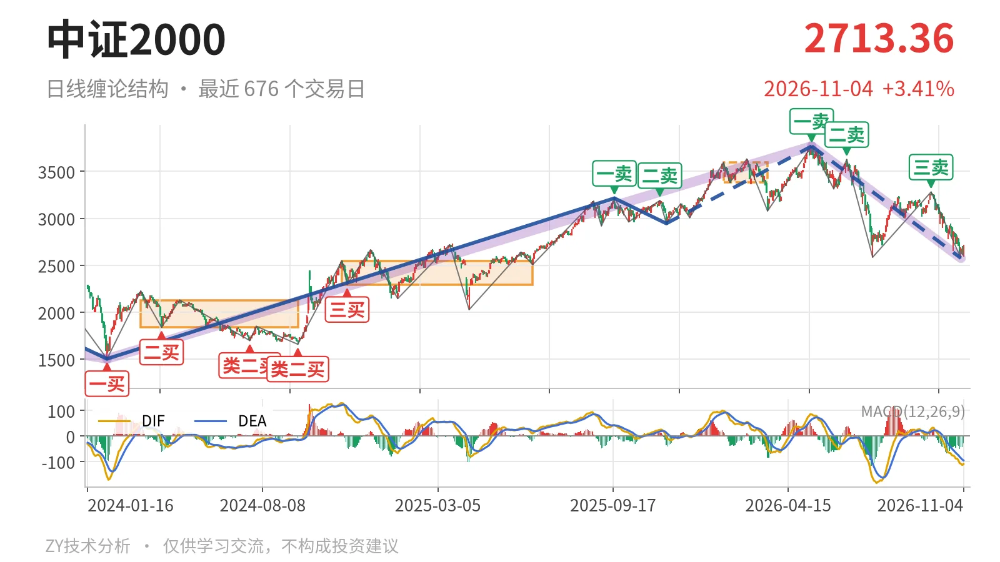
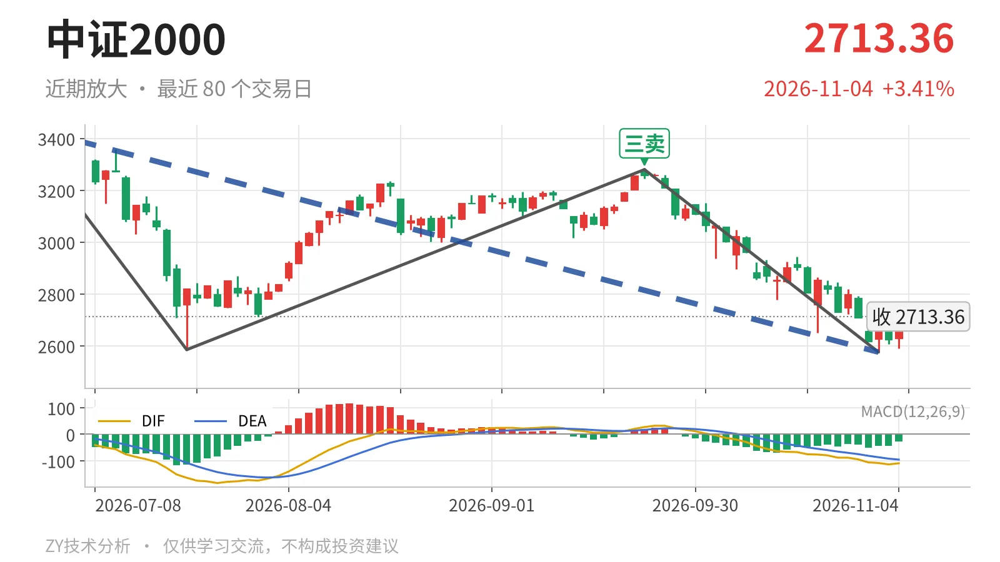

中证2000｜失守3381中枢，2576点暂定类二买

最近日线中枢 3381.36—3593.19点，收盘位于中枢之下
一句话：日线三卖后新低2576点，暂定类二买反弹未回中枢，结构仍弱。
🧱 走势结构：日线下跌段未见结束
5月14日3768.08点以来的下跌段还在延续，日线线段处于5月14日至11月2日的下跌线段中，内含5笔。该段前接2024年2月6日至2026年5月14日的上涨段，由1503.44点涨至3768.08点，涨幅约150.6%，当前属于这段上涨后的回落。11月3日至11月4日只有2根K线，尚未形成日线笔，2576.02低点后的反弹还只是一笔内波动，没有改变下跌线段方向。

🎯 中枢与位置：跌破中枢未回抽
最新价已跌破最近日线笔中枢，尚未回抽至中枢内。最近日线笔中枢为1月26日至3月23日形成的3381.36—3593.19点，中轴3487点附近，最新收盘2713.36点低于该中枢下沿约19.8%。此前中枢由2024年11月12日至2025年6月23日的2293.12—2547.90点抬升至3381—3593点，现在价格回到新中枢下方，中枢上移后反成压力。更大级别线段中枢2022年4月27日至2023年6月19日的2085.97—2437.36点仍在现价下方，更早支撑尚未破坏。
🚦 买卖点：三卖后新低，类二买待定
日线笔级别卖点逐级降低，三卖后仍在回落。5月14日一卖3768.08点、6月23日二卖3626.48点、9月22日三卖3280.29点，一个比一个低。三卖之后价格继续跌至2576.02点，说明该三卖后回落未止。线段级别上，11月2日2576.02点只是暂定的类二买，因为所在下跌线段仍在延续，这个买点会随后续走势变化，不可当成已成立的低点。当前最新价2713.36点仍远低于三卖位置3280点。

⚡ 背驰：新低不新弱，底背驰不充分
最近一段下跌笔呈新低不新弱，但底背驰不充分。6月23日至7月21日下跌笔从3626.48点至2585.35点，绿柱面积810，DIF低点-164.2；9月22日至11月2日下跌笔从3280.29点至2576.02点，绿柱面积873，DIF低点-108.5。低点创了新低，但DIF低点抬高，属于新低不新弱；不过绿柱面积873大于810，且最新DIF仍在零轴下方为-109.5，未出现明显拐头，底背驰尚未充分确认。
📍 关键位置：3280点与3381点成压力
3280点附近是9月22日三卖位置，构成短期压力；若反抽站不上3280点，只是三卖后的弱反抽。再上方看最近中枢下沿3381点附近，只要反抽回不到3381点上方，结构上维持三卖后的下跌延伸，日线仍偏弱。下方2576点附近为暂定类二买低点，若后续跌破2576点，该暂定类二买被破坏，5月14日以来的下跌线段继续。重新站上3381点，当前下跌转为中枢扩展的可能性才会增加。
⚠️ 本文为基于公开行情数据的缠论技术结构记录，由程序自动计算并生成，仅供学习交流，不构成任何投资建议。市场有风险，投资需谨慎。